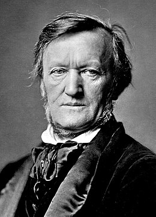

Chopin
Chopin

Wagner
러시아계 미국인 작곡가이자 피아니스트인 이 인물은 전 세계의 피아니스트들이 가장 위대한 피아니스트로 인정하는 대표적인 인물입니다. 1873년에 러시아에서 태어나 1943년에 미국 캘리포니아에서 사망했으며, 국민악파와 낭만주의 음악의 두 가지 시대를 경험한 음악가입니다. 그는 피아노 협주곡 4곡으로 유명하며, 현대 피아니스트들에게 영감을 주는 중요한 업적을 남겼습니다. 그 외에도 다양한 작품을 창작하였으며, 그 중에서도 "파가니니 주제에 의한 광시곡"과 "보칼리제" 같은 곡들은 광고와 같은 매체를 통해 널리 알려진 작품 중 하나입니다.